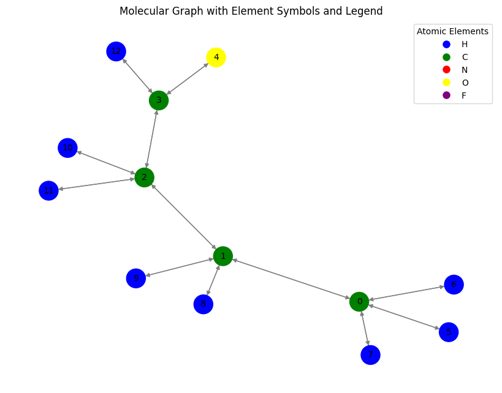
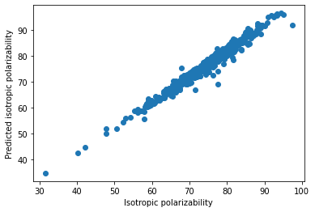

27. Implementing a GNN using the PyTorch Geometric library#
!pip install torch torchvision torchaudio torch-geometric networkx matplotlib
Requirement already satisfied: torch in /usr/local/lib/python3.10/dist-packages (2.5.1+cu121)
Requirement already satisfied: torchvision in /usr/local/lib/python3.10/dist-packages (0.20.1+cu121)
Requirement already satisfied: torchaudio in /usr/local/lib/python3.10/dist-packages (2.5.1+cu121)
Collecting torch-geometric
Downloading torch_geometric-2.6.1-py3-none-any.whl.metadata (63 kB)
━━━━━━━━━━━━━━━━━━━━━━━━━━━━━━━━━━━━━━━━ 63.1/63.1 kB 1.4 MB/s eta 0:00:00
?25hRequirement already satisfied: networkx in /usr/local/lib/python3.10/dist-packages (3.4.2)
Requirement already satisfied: matplotlib in /usr/local/lib/python3.10/dist-packages (3.8.0)
Requirement already satisfied: filelock in /usr/local/lib/python3.10/dist-packages (from torch) (3.16.1)
Requirement already satisfied: typing-extensions>=4.8.0 in /usr/local/lib/python3.10/dist-packages (from torch) (4.12.2)
Requirement already satisfied: jinja2 in /usr/local/lib/python3.10/dist-packages (from torch) (3.1.4)
Requirement already satisfied: fsspec in /usr/local/lib/python3.10/dist-packages (from torch) (2024.10.0)
Requirement already satisfied: sympy==1.13.1 in /usr/local/lib/python3.10/dist-packages (from torch) (1.13.1)
Requirement already satisfied: mpmath<1.4,>=1.1.0 in /usr/local/lib/python3.10/dist-packages (from sympy==1.13.1->torch) (1.3.0)
Requirement already satisfied: numpy in /usr/local/lib/python3.10/dist-packages (from torchvision) (1.26.4)
Requirement already satisfied: pillow!=8.3.*,>=5.3.0 in /usr/local/lib/python3.10/dist-packages (from torchvision) (11.0.0)
Requirement already satisfied: aiohttp in /usr/local/lib/python3.10/dist-packages (from torch-geometric) (3.11.2)
Requirement already satisfied: psutil>=5.8.0 in /usr/local/lib/python3.10/dist-packages (from torch-geometric) (5.9.5)
Requirement already satisfied: pyparsing in /usr/local/lib/python3.10/dist-packages (from torch-geometric) (3.2.0)
Requirement already satisfied: requests in /usr/local/lib/python3.10/dist-packages (from torch-geometric) (2.32.3)
Requirement already satisfied: tqdm in /usr/local/lib/python3.10/dist-packages (from torch-geometric) (4.66.6)
Requirement already satisfied: contourpy>=1.0.1 in /usr/local/lib/python3.10/dist-packages (from matplotlib) (1.3.1)
Requirement already satisfied: cycler>=0.10 in /usr/local/lib/python3.10/dist-packages (from matplotlib) (0.12.1)
Requirement already satisfied: fonttools>=4.22.0 in /usr/local/lib/python3.10/dist-packages (from matplotlib) (4.55.0)
Requirement already satisfied: kiwisolver>=1.0.1 in /usr/local/lib/python3.10/dist-packages (from matplotlib) (1.4.7)
Requirement already satisfied: packaging>=20.0 in /usr/local/lib/python3.10/dist-packages (from matplotlib) (24.2)
Requirement already satisfied: python-dateutil>=2.7 in /usr/local/lib/python3.10/dist-packages (from matplotlib) (2.8.2)
Requirement already satisfied: six>=1.5 in /usr/local/lib/python3.10/dist-packages (from python-dateutil>=2.7->matplotlib) (1.16.0)
Requirement already satisfied: aiohappyeyeballs>=2.3.0 in /usr/local/lib/python3.10/dist-packages (from aiohttp->torch-geometric) (2.4.3)
Requirement already satisfied: aiosignal>=1.1.2 in /usr/local/lib/python3.10/dist-packages (from aiohttp->torch-geometric) (1.3.1)
Requirement already satisfied: attrs>=17.3.0 in /usr/local/lib/python3.10/dist-packages (from aiohttp->torch-geometric) (24.2.0)
Requirement already satisfied: frozenlist>=1.1.1 in /usr/local/lib/python3.10/dist-packages (from aiohttp->torch-geometric) (1.5.0)
Requirement already satisfied: multidict<7.0,>=4.5 in /usr/local/lib/python3.10/dist-packages (from aiohttp->torch-geometric) (6.1.0)
Requirement already satisfied: propcache>=0.2.0 in /usr/local/lib/python3.10/dist-packages (from aiohttp->torch-geometric) (0.2.0)
Requirement already satisfied: yarl<2.0,>=1.17.0 in /usr/local/lib/python3.10/dist-packages (from aiohttp->torch-geometric) (1.17.2)
Requirement already satisfied: async-timeout<6.0,>=4.0 in /usr/local/lib/python3.10/dist-packages (from aiohttp->torch-geometric) (4.0.3)
Requirement already satisfied: MarkupSafe>=2.0 in /usr/local/lib/python3.10/dist-packages (from jinja2->torch) (3.0.2)
Requirement already satisfied: charset-normalizer<4,>=2 in /usr/local/lib/python3.10/dist-packages (from requests->torch-geometric) (3.4.0)
Requirement already satisfied: idna<4,>=2.5 in /usr/local/lib/python3.10/dist-packages (from requests->torch-geometric) (3.10)
Requirement already satisfied: urllib3<3,>=1.21.1 in /usr/local/lib/python3.10/dist-packages (from requests->torch-geometric) (2.2.3)
Requirement already satisfied: certifi>=2017.4.17 in /usr/local/lib/python3.10/dist-packages (from requests->torch-geometric) (2024.8.30)
Downloading torch_geometric-2.6.1-py3-none-any.whl (1.1 MB)
━━━━━━━━━━━━━━━━━━━━━━━━━━━━━━━━━━━━━━━━ 1.1/1.1 MB 7.4 MB/s eta 0:00:00
?25hInstalling collected packages: torch-geometric
Successfully installed torch-geometric-2.6.1
import torch
import torch.nn.functional as F
import torch.nn as nn
from torch_geometric.datasets import QM9
from torch_geometric.loader import DataLoader
from torch_geometric.nn import NNConv, global_add_pool
import numpy as np
dset = QM9('.')
len(dset)
Downloading https://data.pyg.org/datasets/qm9_v3.zip
Extracting ./raw/qm9_v3.zip
Processing...
Using a pre-processed version of the dataset. Please install 'rdkit' to alternatively process the raw data.
Done!
130831
27.1. QM9 Dataset#
The QM9 dataset is a widely-used benchmark dataset in computational chemistry and machine learning for molecular property prediction. It contains quantum mechanical calculations for 134,000+ small organic molecules composed of hydrogen (H), carbon ©, nitrogen (N), oxygen (O), and fluorine (F). The dataset is a valuable resource for training models to predict quantum chemical properties of molecules.
27.2. Data Structure in QM9#
Each molecule in the QM9 dataset is represented as a graph, where:
Nodes represent atoms (H, C, N, O, F).
Edges represent bonds between the atoms.
In PyTorch Geometric, the dataset is stored in a Data object, which contains the following attributes:
Attribute |
Shape |
Description |
|---|---|---|
|
|
Node feature matrix describing properties of each atom. |
|
|
Connectivity matrix defining which atoms are connected by bonds (source and target nodes). |
|
|
Edge feature matrix describing properties of the bonds (e.g., bond type, aromaticity, etc.). |
|
|
Molecular property vector containing 19 quantum mechanical properties for the molecule. |
|
|
3D Cartesian coordinates (x, y, z) of each atom in the molecule. |
|
|
Atomic numbers of the atoms (e.g., 1 for H, 6 for C). |
|
|
Index of the molecule in the dataset. |
|
|
Name of the molecule (e.g., |
data = dset[124]
data
Data(x=[13, 11], edge_index=[2, 24], edge_attr=[24, 4], y=[1, 19], pos=[13, 3], idx=[1], name='gdb_128', z=[13])
27.3. Details of Each Attribute#
27.3.1. x (Node Features)#
The
xmatrix contains features describing each atom in the molecule.Example features may include:
Atomic number (Z): Numerical identifier for the atom (e.g., H = 1, C = 6).
Hybridization state: sp, sp2, sp3, etc.
Formal charge: Charge on the atom.
Number of valence electrons: Total electrons available for bonding.
27.3.2. edge_index (Edge Connectivity)#
This is a sparse matrix in COO (Coordinate List) format that defines the connections (bonds) between atoms.
The first row contains the source nodes of the edges.
The second row contains the target nodes of the edges.
27.3.3. edge_attr (Edge Features)#
This matrix contains features describing each bond in the molecule.
Example features may include:
Bond type: Single, double, triple, aromatic.
Bond length: Distance between the connected atoms.
Aromaticity: Whether the bond is part of an aromatic ring.
27.3.4. y (Molecular Properties)#
The
yattribute is a vector of 19 quantum mechanical properties for the molecule, computed using Density Functional Theory (DFT).Examples of these properties include:
HOMO: Energy of the Highest Occupied Molecular Orbital.
LUMO: Energy of the Lowest Unoccupied Molecular Orbital.
Dipole moment: Measure of the separation of positive and negative charges in the molecule.
Atomization energy: Energy required to break a molecule into individual atoms.
Polarizability: Molecule’s ability to polarize in an electric field.
27.3.5. pos (3D Atomic Positions)#
The
posattribute contains the 3D Cartesian coordinates of each atom in the molecule.These are crucial for tasks involving spatial and geometric properties, such as force fields or molecular dynamics.
27.3.6. z (Atomic Numbers)#
The
zattribute stores the atomic numbers of the atoms in the molecule.
Atomic Number (Z) |
Element |
Symbol |
|---|---|---|
1 |
Hydrogen |
H |
6 |
Carbon |
C |
7 |
Nitrogen |
N |
8 |
Oxygen |
O |
9 |
Fluorine |
F |
27.3.7. idx (Molecule Index)#
This is the unique index of the molecule in the dataset, useful for tracking or referencing specific molecules.
27.3.8. name (Molecule Name)#
The name corresponds to the GDB identifier of the molecule (e.g.,
gdb_128this is ethanol.).
# Lets visualize a few samples
import networkx as nx
from torch_geometric.utils import to_networkx
# Convert the PyTorch Geometric graph to a NetworkX graph
G = to_networkx(data, node_attrs=['x'], edge_attrs=None)
# Inspect the graph
print(G.nodes(data=True))
print(G.edges(data=True))
[(0, {'x': [0.0, 1.0, 0.0, 0.0, 0.0, 6.0, 0.0, 0.0, 0.0, 0.0, 3.0]}), (1, {'x': [0.0, 1.0, 0.0, 0.0, 0.0, 6.0, 0.0, 0.0, 0.0, 0.0, 2.0]}), (2, {'x': [0.0, 1.0, 0.0, 0.0, 0.0, 6.0, 0.0, 0.0, 0.0, 0.0, 2.0]}), (3, {'x': [0.0, 1.0, 0.0, 0.0, 0.0, 6.0, 0.0, 0.0, 0.0, 0.0, 1.0]}), (4, {'x': [0.0, 0.0, 0.0, 1.0, 0.0, 8.0, 0.0, 0.0, 0.0, 0.0, 0.0]}), (5, {'x': [1.0, 0.0, 0.0, 0.0, 0.0, 1.0, 0.0, 0.0, 0.0, 0.0, 0.0]}), (6, {'x': [1.0, 0.0, 0.0, 0.0, 0.0, 1.0, 0.0, 0.0, 0.0, 0.0, 0.0]}), (7, {'x': [1.0, 0.0, 0.0, 0.0, 0.0, 1.0, 0.0, 0.0, 0.0, 0.0, 0.0]}), (8, {'x': [1.0, 0.0, 0.0, 0.0, 0.0, 1.0, 0.0, 0.0, 0.0, 0.0, 0.0]}), (9, {'x': [1.0, 0.0, 0.0, 0.0, 0.0, 1.0, 0.0, 0.0, 0.0, 0.0, 0.0]}), (10, {'x': [1.0, 0.0, 0.0, 0.0, 0.0, 1.0, 0.0, 0.0, 0.0, 0.0, 0.0]}), (11, {'x': [1.0, 0.0, 0.0, 0.0, 0.0, 1.0, 0.0, 0.0, 0.0, 0.0, 0.0]}), (12, {'x': [1.0, 0.0, 0.0, 0.0, 0.0, 1.0, 0.0, 0.0, 0.0, 0.0, 0.0]})]
[(0, 1, {}), (0, 5, {}), (0, 6, {}), (0, 7, {}), (1, 0, {}), (1, 2, {}), (1, 8, {}), (1, 9, {}), (2, 1, {}), (2, 3, {}), (2, 10, {}), (2, 11, {}), (3, 2, {}), (3, 4, {}), (3, 12, {}), (4, 3, {}), (5, 0, {}), (6, 0, {}), (7, 0, {}), (8, 1, {}), (9, 1, {}), (10, 2, {}), (11, 2, {}), (12, 3, {})]
from torch_geometric.utils import to_networkx
import matplotlib.pyplot as plt
import networkx as nx
# Mapping atomic numbers to elements and colors
atomic_number_to_element = {1: 'H', 6: 'C', 7: 'N', 8: 'O', 9: 'F'}
atomic_number_to_color = {1: 'blue', 6: 'green', 7: 'red', 8: 'yellow', 9: 'purple'}
# Convert PyTorch Geometric graph to NetworkX
G = to_networkx(data)
# Extract atomic numbers and corresponding elements/colors
atomic_numbers = data.x[:, 5].tolist() # Assuming column 5 contains atomic numbers
elements = [atomic_number_to_element[int(z)] for z in atomic_numbers]
node_colors = [atomic_number_to_color[int(z)] for z in atomic_numbers]
# Create a legend
legend_elements = [
plt.Line2D([0], [0], marker='o', color='w', markerfacecolor=color, markersize=10, label=atomic_number_to_element[element])
for element, color in atomic_number_to_color.items()
]
# Node labels using element symbols
node_labels = {i: elements[i] for i in range(len(elements))}
# Plot the graph
plt.figure(figsize=(8, 6))
nx.draw(
G,
with_labels=True,
node_color=node_colors,
edge_color='gray',
node_size=500,
font_size=10,
)
# Add the legend
plt.legend(handles=legend_elements, loc='best', title="Atomic Elements")
plt.title("Molecular Graph with Element Symbols and Legend")
plt.show()

# New information can be added as
data.new_attribute = torch.tensor([1, 2, 3])
data
Data(x=[5, 11], edge_index=[2, 8], edge_attr=[8, 4], y=[1, 19], pos=[5, 3], idx=[1], name='gdb_1', z=[5], new_attribute=[3])
device = torch.device("cuda:0" if torch.cuda.is_available() else "cpu")
data.to(device)
data.new_attribute.is_cuda
True
class ExampleNet(torch.nn.Module):
def __init__(self,num_node_features,num_edge_features):
super().__init__()
conv1_net = nn.Sequential(nn.Linear(num_edge_features, 32),
nn.ReLU(),
nn.Linear(32, num_node_features*32))
conv2_net = nn.Sequential(nn.Linear(num_edge_features,32),
nn.ReLU(),
nn.Linear(32, 32*16))
self.conv1 = NNConv(num_node_features, 32, conv1_net)
self.conv2 = NNConv(32, 16, conv2_net)
self.fc_1 = nn.Linear(16, 32)
self.out = nn.Linear(32, 1)
def forward(self, data):
batch, x, edge_index, edge_attr=data.batch, data.x, data.edge_index, data.edge_attr
x = F.relu(self.conv1(x, edge_index, edge_attr))
x = F.relu(self.conv2(x, edge_index, edge_attr))
x = global_add_pool(x,batch)
x = F.relu(self.fc_1(x))
output = self.out(x)
return output
from torch.utils.data import random_split
train_set, valid_set, test_set = random_split(dset,[110000, 10831, 10000])
trainloader = DataLoader(train_set, batch_size=32, shuffle=True)
validloader = DataLoader(valid_set, batch_size=32, shuffle=True)
testloader = DataLoader(test_set, batch_size=32, shuffle=True)
qm9_node_feats, qm9_edge_feats = 11, 4
epochs = 4
net = ExampleNet(qm9_node_feats, qm9_edge_feats)
optimizer = torch.optim.Adam(net.parameters(), lr=0.01)
epochs = 4
target_idx = 1 # index position of the polarizability label
device = torch.device("cuda:0" if torch.cuda.is_available() else "cpu")
net.to(device)
ExampleNet(
(conv1): NNConv(11, 32, aggr=add, nn=Sequential(
(0): Linear(in_features=4, out_features=32, bias=True)
(1): ReLU()
(2): Linear(in_features=32, out_features=352, bias=True)
))
(conv2): NNConv(32, 16, aggr=add, nn=Sequential(
(0): Linear(in_features=4, out_features=32, bias=True)
(1): ReLU()
(2): Linear(in_features=32, out_features=512, bias=True)
))
(fc_1): Linear(in_features=16, out_features=32, bias=True)
(out): Linear(in_features=32, out_features=1, bias=True)
)
for total_epochs in range(epochs):
epoch_loss = 0
total_graphs = 0
net.train()
for batch in trainloader:
batch.to(device)
optimizer.zero_grad()
output = net(batch)
loss = F.mse_loss(output, batch.y[:, target_idx].unsqueeze(1))
loss.backward()
epoch_loss += loss.item()
total_graphs += batch.num_graphs
optimizer.step()
train_avg_loss = epoch_loss / total_graphs
val_loss = 0
total_graphs = 0
net.eval()
for batch in validloader:
batch.to(device)
output = net(batch)
loss = F.mse_loss(output,batch.y[:, target_idx].unsqueeze(1))
val_loss += loss.item()
total_graphs += batch.num_graphs
val_avg_loss = val_loss / total_graphs
print(f"Epochs: {total_epochs} | epoch avg. loss: {train_avg_loss:.2f} | validation avg. loss: {val_avg_loss:.2f}")
Epochs: 0 | epoch avg. loss: 0.42 | validation avg. loss: 0.15
Epochs: 1 | epoch avg. loss: 0.14 | validation avg. loss: 0.14
Epochs: 2 | epoch avg. loss: 0.11 | validation avg. loss: 0.08
Epochs: 3 | epoch avg. loss: 0.10 | validation avg. loss: 0.19
net.eval()
predictions = []
real = []
for batch in testloader:
output = net(batch.to(device))
predictions.append(output.detach().cpu().numpy())
real.append(batch.y[:, target_idx].detach().cpu().numpy())
predictions = np.concatenate(predictions)
real = np.concatenate(real)
import matplotlib.pyplot as plt
plt.scatter(real[:500],predictions[:500])
plt.ylabel('Predicted isotropic polarizability')
plt.xlabel('Isotropic polarizability')
#plt.savefig('figures/18_12.png', dpi=300)
Text(0.5, 0, 'Isotropic polarizability')
